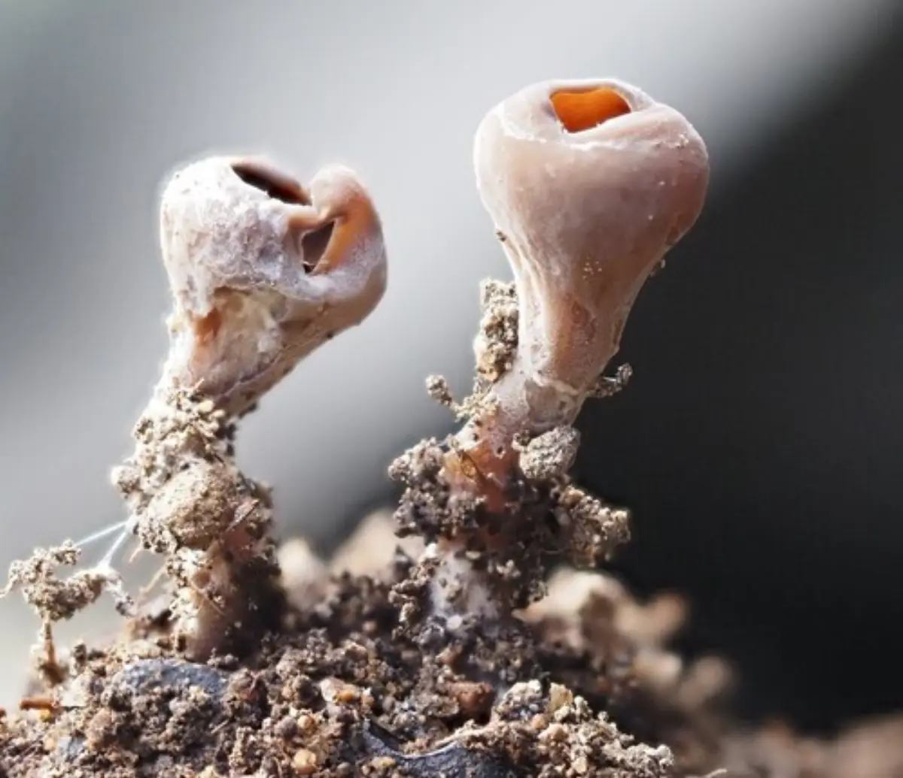

茶花树下的土里长出带柄小杯
茶花花谢后，拨开树下的落叶再看土表。照片里是从土里长出的小杯，不是花朵本身。

现场检查
小杯有短柄，口沿较浅，内部颜色更深。它们长在覆盖物或落叶之间，不长在仍挂在枝上的花瓣上。
鉴别相似表现
花瓣上的灰色绒层仍留在残花上，不会在土里形成这种开口的杯。杜鹃枯蕾上的黑色小刺长在花蕾表面，也不在土表。
处理选择
把落下的茶花花瓣清走，不要在原处堆成湿层。已经长出小杯的表层覆盖物单独装袋，不要翻回茶花根区。
后续复查
下一季花谢后再拨开同一株下的落叶。只在花瓣变褐、土里没有小杯时，先不要当成同一种问题。
寄主检查要点
只在茶花灌木下方寻找这种小杯。远处其他植物的落花变褐，不能用这张土表照片来解释。
轻轻拨开病株正下方的落物，避免碰伤山茶浅根，看看小杯状体是否出现在往年残花间。同时拍一朵刚褐变的花；在别的灌木下发现小杯，并不能解释这株山茶的花瓣受损。
山茶下长了小杯状菌，树上的新花却很好，要把整片花床翻掉吗？
单凭一块木屑上的杯状菌，无法确诊花腐病。先看树冠下的落花，随后几天检查刚开的花，留意是否出现持续扩大的褐斑。若花朵一直完好，可保留根系和周围土床原状。若花瓣接连变褐脱落，及时清走病花，并把花朵与地面杯状物分别拍清楚，用于鉴别。